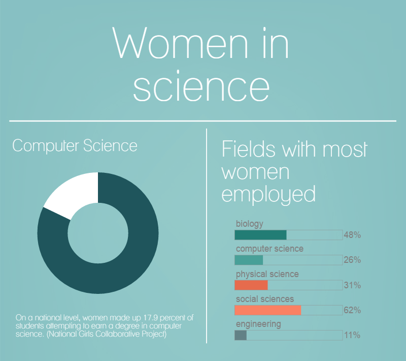
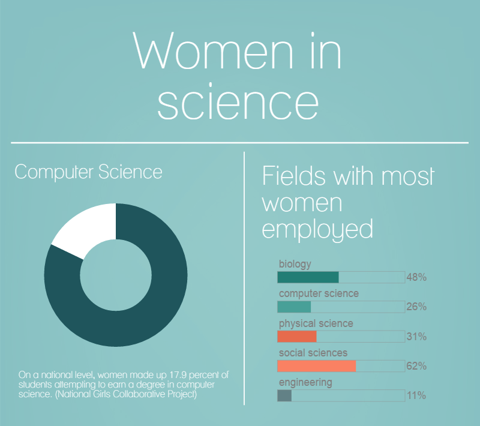

According to economic times around 53% of top Indian companies have a male to female employee ratio of 10:1 or worse. From the household survey by Indian government, women’s enrolment in higher education is 48.6% in 2018-19, the share of female students enrolled in engineering and technology is just 28.9% with 71.1% enrollment by male students. BusninessInsider states that even with 1501 female CEOs, the rate is just 5.01% of the total 29,748 tech companies in India. Females who do pursue computer science at university level, find themselves being outnumbered by males “ 82% versus 17% ” one of the highest gender disparities in course subjects. And this imbalance isn’t helped by the falling trend of females taking up science, maths and computing courses. Women are more likely to experience harassment in online media and more than half of these cases will be uninvestigated.
 

We aim to provide a safe platform that offers social networking and mentoring opportunities as well as a venue where women can read and reflect about other female role models, filling themselves with confidence and with a feeling that they are not alone in their struggles. Aspiring women get to read inspirational stories, learn from it, remain updated about new technologies and other great women.They can also share their internship experiences, about how they bagged a particular scholarship,tips for utilising college time, interviews, entrepreneurship, job and scholarship opportunities for women, anything under the sun that can help another women from a woman. In short, we are breaking stereotypes and barriers to bring wings to women and help them fly high and reach greater heights !